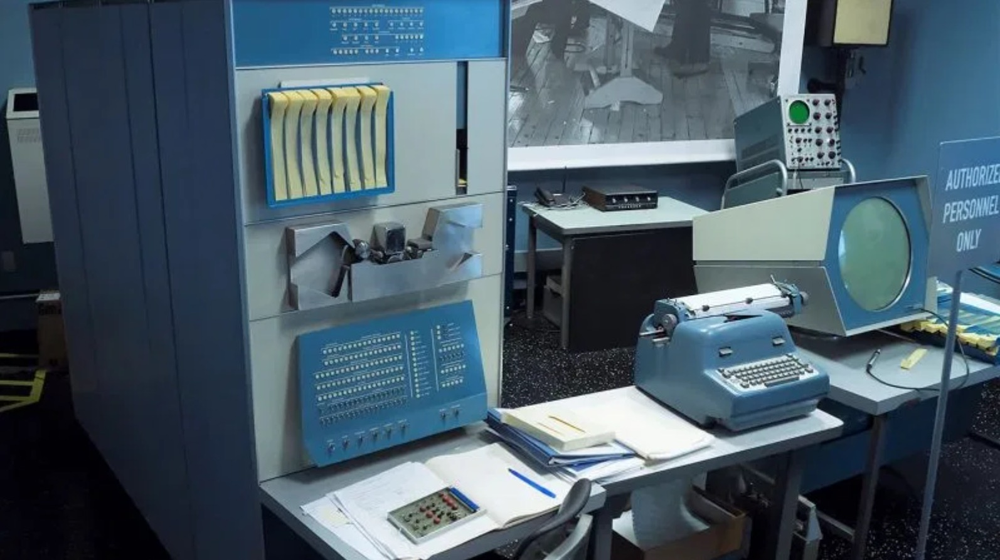

Introduction to
Creative Coding
day 1
Karan Dudeja, Dec 2020Srishti Manipal Institute of Art, Design and Technology
Interim 2020
Class Conduct
Class Conduct
- Show up on time
- WYOC write your own code
- Focus in class and NOT multi-task
- Share screen when asked for
- Use Teams' channel for Q&A. No Emails or Teams-Chat msgs, unless personal non-work requirement
Schedule
for 2 weeks
- Monday - Wednesday
- Morning ; 10am to 12pm ; Online Class / Discussions
- Afternoon ; 1pm to 4pm ; Activity / Doubts
- Thursday
- Morning ; 10am to 12pm ; Activity / Doubts
- Afternoon ; 1pm to 4pm ; Activity / Doubts
- First Friday - same as First Monday
- Last Friday - Presentations
Submissions
- A1; First Sunday
- A1 = A1.1 + A1.2 + A1.3
- A2; Second Saturday
- A2 = A2.1 + A2.2 + A2.3
- A3
Expectations ?
Expectations from you
- Growth mindset To Learn by experimenting, from Others and your own Mistakes
- Attitude; "I'll figure it out"
- Being professional
- Follow good practices & write neat code
- Ask questions but NOT ask for extensions üôÉ
- This is an introduction ONLY and not the end!
- BB ; Check references when provided
- BB ; Submit on time as per the instructions
- Stay Safe üò∑
Symbols
üìå = Important & Mandatory
üìó = Reference
Introductions
ü뮂Äçüéì üë©‚Äçüéì
Intro - Me üôã‚Äç‚ôÇÔ∏è
- Interests; Creative Technologies, Piano
- Wants to learn; Machine Learning
Intro - You üëã
- Interests; ?
- Wants to learn; ?
Creative
Coding
Creative Coding
?
What brings you here
?
QUICK HISTORY
1959
PDP-1
https://hackaday.com/2017/06/27/the-pdp-1-the-machine-that-started-hacker-culture/
1959
Minskytron or 3 Position Display
https://commons.wikimedia.org/wiki/File:Minskytron-PDP-1-20070512.jpg
Fast Forward
üìó https://www.computerhistory.org/pdp-1/f190e5632731c66de256ff6b15c8b864/ , https://www.explainthatstuff.com/computer-graphics.html , https://www.timetoast.com/timelines/the-history-of-digital-art , http://le-corpus.com/atlas/video/ , https://graphics.stanford.edu/courses/cs248-02/History-of-graphics/History-of-graphics.pdf , https://link.springer.com/chapter/10.1007%2F978-3-642-70259-4_2 , https://www.youtube.com/watch?v=61y5LLmIvaw , http://nautil.us/blog/the-most-important-object-in-computer-graphics-history-is-this-teapot , http://fall2019-3a.designforthe.net/library/html-art , https://www.debutart.com/artist/paul-price/computer-arts-photoshop , http://www.vam.ac.uk/content/articles/a/computer-art-history/ , https://techcrunch.com/2016/05/08/the-digital-age-of-data-art/ , https://y2socialcomputing.wordpress.com/2012/02/03/data-visualisation-datascapes-hmmm/
Creative Coding

üìó https://en.wikipedia.org/wiki/Creative_coding
Creative Coding
Perceptual -
Human senses we will focus on visuals
Involves -
- Syntax
- Constructs
- Logic will require some basic Math
- Tweaking
TOOLS
check the colorful links
Building
p5.jsSharing
p5.js EditorOpenProcessing
Glitch
Talking to the Computer
coding is a sport and it requires
- Being Precise
- Patience when Debugging
Hello World
C
#include <stdio.h>
int main(){
printf("Hello World");
return 0;
}
Hello World
Python
Print("Hello World")
Hello World
Creative Coding - Processing
void setup(){
size(400, 400);
}
void draw(){
background(255);
fill(235, 40, 95);
ellipse(200, 200, 50, 50);
}
Hello World
Creative Coding - p5js
function setup(){
createCanvas(400, 400);
}
function draw(){
background(255);
fill(235, 40, 95);
ellipse(200, 200, 50, 50);
}
ü§∏
Activity 1.1
Coloured text is clickable. Submission details on the Blog.
Explore the p5.js website and familiarise yourself.
Find out more about Creative Coding.
Make an account on p5.js Editor or
OpenProcessing or
Glitch
On a canvas of 500x500, with circles, squares/rectangles and triangles,
make one of the following:
- Face
- House
- Space Ship
- Something else